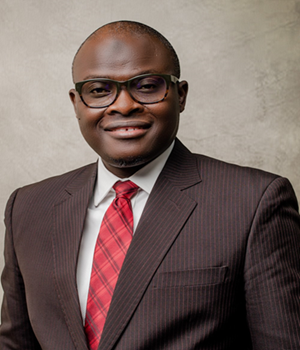
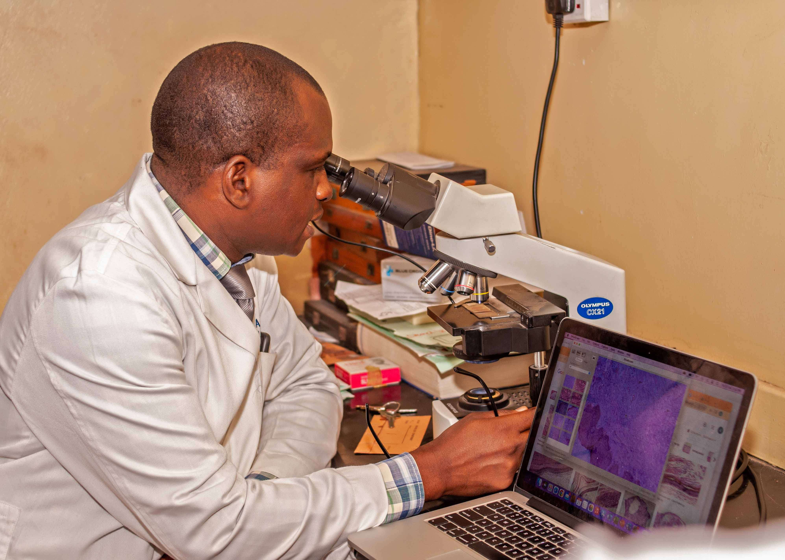

Our Team
HPV Consortium, College of Medicine, University of Ibadan is a team of researchers and healthcare providers striving to bring a change to the immediate society and the society at large. We are a body of researchers focused on the epidemiology, prevention and the behavioural pattern of people in the general population towards HPV associated infections.
Meet Our Team of Investigators
Prof. I.O. Morhason-Bello

Professor. Imran O. Morhason-Bello, an indigene of Ayetoro-Oke (Kajola LGA, Oyo State) is an alumnus of University of Ibadan, University of Liverpool, and London School of Hygiene and Tropical Medicine London, UK. He did his residency training programme at the University College Hospital, Ibadan to obtain a Fellowship of West African College of Surgeon and National Postgraduate Medical College in the Faculty of Obstetrics and Gynaecology. He currently holds a joint appointment with University of Ibadan and University College Hospital, Ibadan in the Department of Obstetrics and Gynaecology. He is a Professor and Honourary Consultant. He is also a Clinical Epidemiologist and certified trainer in Management and Leadership. Professor Morhason-Bello’s clinical and research portfolio covers different aspects of Women Health with special interest in Genito-urinary Medicine/Urogynaecology (Female Pelvic Medicine and Reconstructive Surgery), Gynae-oncology, Infectious Diseases, Sexual and Population Health. He is currently leading several funded research grants on human papillomavirus related conditions in different anatomic sites including cervix, anal, oral and oro-pharyngeal precancer and cancers with multidisciplinary team at the College of Medicine, University of Ibadan, Ibadan and other institutions in USA and United Kingdom. Some of these projects include BigCAT by AACR, R01, U01 and Catalyzer grants funded by AACR, NIH and Northwestern University, USA amongst others. He led Sexual Behavior and HPV infections in Nigerians in Ibadan (SHINI) study - one of the largest population epidemiological studies in Sub-Saharan Africa on multiple anatomic sites HPV infections and morbidities (cervical, anal, vulvar penile and oral cavity) with over 10,000 duplicate biological samples among brothel-based female sex workers, women, and men in the general population in Nigeria. He is a dedicated lecturer with extensive experience in teaching, mentoring, and examining medical students, resident doctors, and postgraduates. He has supervised numerous dissertations and theses for resident doctors, as well as master’s and PhD students at both the University of Ibadan and the Pan African University Life and Earth Sciences Institute. He consults for several international organizations on women’s health including emergency obstetric care and sexual and reproductive health training manual and development of protocols and guidelines on different aspects of Women health in Nigeria. He is a member to many international organizations and serving on many technical working committees on Women Health. He served on the Board of Medical and Dental Council of Nigeria (MDCN), and MDCN Disciplinary Tribunal Panel (2018-2022). He is also on the board of some corporate organizations. Professor Morhason-Bello has over 250 publications in peer reviewed scientific journals, monographs, and chapters of scientific books. He has won several prizes and awards in recognition of his performance at different stages of his education and career.
Prof. I.F. Adewole
Prof. Isaac F. Adewole is a former Minister of Health in Nigeria and former Vice President. Chancellor, University of Ibadan, Nigeria; and former President of the African Organization for Research and Training in Cancer. He co-founded the African Cancer Coalition and is a member of the International Task Force on the Elimination of Cervical Cancer in the Commonwealth. Prof. Adewole is a global health expert and leader dedicated to the health and well-being of women. He has led multiple research projects on cervical cancer prevention, diagnosis, and capacity building in Nigeria and Sub-Saharan Africa. He has authored over 250 publications on topics such as cervical cancer, sexual and reproductive health and rights, abortion, HIV, and Human Papillomavirus (Total Citation 20,518; h index 48; i10- index 140). As Minister of Health, he launched an ambitious program to rehabilitate 10,000 primary health care centers. He concentrated on swiftly reducing maternal mortality in Nigeria, eradicating mother-to-child transmission of HIV, enhancing capacity for cancer prevention and management, and fortifying the national public health system to tackle disease outbreaks effectively. He served as a Commissioner on the WHO High-Level Commission on NCD (2018-2019) and the Lancet Oncology Commission on Cancer Control in Sub-Saharan Africa. He is also a member of the UNESCO/UNFPA-sponsored High-Level Committee on West and Central Africa (WCA), which is dedicated to promoting the health and well-being of adolescents and young people. Currently, he is involved in reviewing the National Comprehensive Cancer Network’s Harmonized Cancer Treatment Guidelines for Sub-Saharan Africa and serves on the Lancet Commission on Cancer and Health Systems. He is a Patron of the Boys Brigade of Nigeria. In 2020, Emperor Naruhito awarded him the Order of the Rising Sun and the Gold and Silver Star of Japan in recognition of his efforts as Minister of Health and for promoting closer Japanese-Nigerian relations. He is the Chair of the National Task Force on Cervical Cancer Elimination in Nigeria and a Senior Health, Diplomacy, and Policy Consultant for the African Centre for Disease Control and Prevention (Africa CDC). He also serves as an Advisor to the Ministerial Executive Leadership (MELP) Program of the Africa CDC.
Prof. J.O. Ogunbiyi
Professor J. Olufemi Ogunbiyi currently serves as the Director of the Ibadan Cancer registry. He is an accomplished Pathologist, Cancer researcher, and administrator. He is a Professor of Anatomial Pathology at the College of Medicine of the University of Ibadan, and has been an honorary Consultant to the University College Hospital Ibadan for some thirty five years. He graduated MBBS from the University of Lagos and became a Fellow of the West African College of Physicians in Laboratory Medicine in 1990. He has also been honoured with various other Fellowships including those of the College of Pathologists of East, Central and Southern Africa (ECSA), Foundation Fellow of the Nigerian Academy of Medicine and the Academy of Medical Sciences, International Fellow of the College of American Pathologists, and a fellow of the Royal College of Physicians of Edinburgh. He has held a number of positions during his service years including being twice Head of the Department of Pathology, Subdean undergraduate and Subdean Postgraduate Studies of the Faculty of Basic Medical Sciences, University Senate Representative on the Board of the University college hospital, and Academy Secretary of the Academy of Medical Sciences of Nigeria. He still serves as a member of council of the Nigerian Academy of Medicine. He was the founding President of the West African division of the International Acadmy of Pathology and its charter. He is a past Secretary General of the West African College of Physicians where he served at the inception of the independent College from the West African postgraduste medical College. His research focuses on genetic epidemiology of cancer in the main with ineterests in Prostate, Lung Liver, Gastrointestinal and Cervical cancers. He has published over 160 scientific articles in reputable local and international journals and co-authored chapters in books. His postion as Cancer Registry Director has provided the opportunities to participate in National and Regional health planning efforts being actively involved in the development of Cancer Control Plans. He currently serves as the Board member representing the African Cancer Registries Network on the international Association of Cancer Registries.
Prof. B.L. Salako
Professor Babatunde Lawal Salako is an accomplished physician, academic, researcher, and administrator. He currently serves as a Professor of Medicine at the College of Medicine, University of Ibadan, and is the immediate past Director-General of the Nigerian Institute of Medical Research (NIMR), Yaba, Lagos. He earned his Bachelor of Medicine and Bachelor of Surgery (MBBS) degree from the University of Ibadan in 1986 and became a Fellow of the West African College of Physicians in 1994. Over the years, Professor Salako has held several key leadership roles at the University of Ibadan, including Head of the Department of Medicine and Provost of the College of Medicine. He is also a Fellow of both the Royal College of Physicians of Edinburgh and the Royal College of Physicians of London. His research focuses on chronic kidney disease, renal replacement therapy, and hypertension. He has published over 240 scientific articles in reputable local and international journals and authored two books. Professor Salako has received numerous professional honors. He was named a Foundation Fellow of the Nigerian Academy of Medicine (FNAMed) in 2019, elected Fellow of the Nigerian Academy of Science (FAS) in 2020, and became a Fellow of the Nigerian Association of Nephrology (FNAN) in 2022. He has contributed significantly to national and international health research efforts. He served as Chairman of the National Health Research Committee and the National COVID-19 Research Coalition. Additionally, he has been a member of the TETFund Research and Development Standing Committee and the Board of Experts for the Central Bank of Nigeria (CBN) Health Sector Research and Development Innovation Scheme. Internationally, Professor Salako represented Nigeria on the General Assembly of the European and Developing Countries Clinical Trials Partnership (EDCTP) and was a member of the WHO/TDR Joint Coordinating Board and its Standing Committee. He chaired the Disease Endemic Countries Committee of the TDR for two years and served on the WHO Editorial Board focused on strengthening R&D systems. He has also acted as a Temporary Adviser to the World Health Organization on multiple occasions.
Prof. A.A. Aderinto
Professor Adeyinka Abideen Aderinto studied at the University of Ibadan, Ibadan, Nigeria and obtained the PhD degree in 1997. He is a Professor of Sociology and a past Deputy Vice Chancellor (Academic) of the University of Ibadan, Ibadan, Nigeria. Prior to his appointment to the position in March, 2017, he had served as the Dean of the institution's Postgraduate School, Director of Special Duties in the office of the Vice Chancellor, Deputy-Dean of the Postgraduate School, as well as the Head of the Department of Sociology of the institution. Professor Aderinto is an active researcher and has been part of many collaborative research programmes funded by international donor agencies. He has also been a recipient of many awards spanning his student days till now. His main research areas are deviance, childhood and Gender studies. Professor Adeyinka Abideen Aderinto is a member of many professional associations namely the International Sociological Association, the Council for the Development of Social Research in Africa, Dakar, Senegal, African Sociological Association, Union of African Population Studies, the Nigeria Anthropological and Sociological Association, the Nigerian Society of Criminologists and the South African Sociological Association, among many others. He is a fellow of the Nigerian Anthropological and Sociological Association, among others. Professor Aderinto has published widely in his areas of research, and currently has over 120 publications in books and journals.
Prof. A.O. Adisa

Akinyele O. Adisa graduated from the University of Ibadan in the year 2000 and completed his residency training in Oral Pathology in 2009. Following this, he was accepted into the services of the University of Ibadan as a lecturer where he has been involved in didactic and clinical undergraduate and postgraduate students training since 2010. He was accepted into the services of the University College Hospital as an Honorary Consultant Oral Pathologist in 2010 and has engaged in evidenced-based patient care related to oral medicine, oral radiology and oral pathology diagnosis. He has continually engaged in clinical and laboratory research and scholarship in the following capacities: As an Associate Research Fellow of the Frankfurt Orofacial Regenerative Medicine Laboratory in Frankfurt, Germany, he collaboratively studied the tumor biology of several oro-facial neoplasms. As a Visiting Researcher to the Oral Pathology Department of the School of Dentistry, Sheffield UK, he collaboratively unraveled the genomics of ameloblastoma. He is a member of several international research groups, one of which is the HPV consortium, where he is an investigator in the study on Epigenetics of Oral and Oropharyngeal Cancers in persons living with HIV. He is a resource person to the National Postgraduate Medical College of Nigeria and the Ghana College of Physicians and Surgeons, a reviewer and sub-editor for several local and international journals and an external examiner to several Dental Schools in Nigeria. His research has focused majorly on odontogenic tumors, evolution and molecular characterization of head and neck cancers and medical education, and these have culminated in the collaborative publication of over 100 articles in peer-reviewed local and international journals. Akinyele O. Adisa is currently a Professor of Oral Pathology, and the Head, Department of Oral Pathology, University of Ibadan, Nigeria.
Prof. Akinyemi
Dr Joshua Akinyemi holds a PhD in Medical Statistics/Demography and has expertise in medical biostatistics and statistical demography with special interest in demographic estimation and statistical modelling in areas such as mortality, reproductive/child health, communicable and non-communicable diseases. His interests also include regression decomposition; small area estimation techniques; and the burgeoning discipline of data science and allied topics such as statistical and machine learning. Dr Akinyemi has over fifteen years of teaching and research experience as an applied statistician. In addition to strong conceptualization skills, he is proficient in survey design and implementation, data management and analytical report writing. He extensive experience in advanced statistical modelling and multi-country analysis of complex nationally-representative household surveys. Dr Akinyemi is a recipient of several international fellowships including the Consortium for Advanced Research Training [CARTA] doctoral fellowship in 2010, CARTA postdoctoral fellowship and Wits University Research Council Postdoctoral fellowship in 2016 and 2017 respectively. He is biostatistician for several completed and on-going research projects in a wide range of health topics spanning cardiovascular diseases, HIV/AIDS, malaria and reproductive health. Dr Akinyemi has participated in many international conferences and have papers published in reputable peer-reviewed journals. He is a member of the International Union for the Scientific Study of Population (IUSSP), International Society for Clinical Biostatistics, International Epidemiological Association, Population Association of America among other professional organizations.
Dr. A.O. Salako
Dr. Salako earned his medical degree in 2007 from Ladoke Akintola University of Technology in Oyo State, Nigeria. After completing his internship at Lagos State University Teaching Hospital, he moved on to residency training in Paediatrics at the foremost Lagos University Teaching Hospital, Lagos; this experience motivated him to undergo a clinical fellowship training in pediatric haematology and oncology as a subspecialty at Tata Medical Centre in Kolkata, India. During his residency and fellowship training, he was involved in the care of children with sickle cell disease, haematological diseases, childhood cancer, and HIV/AIDs, among other childhood illnesses. In 2017, he became a Fellow of the West African College of Physicians. Dr. Salako is a Consultant Paediatrician (Haematology/Oncology) and Senior Research Fellow at the Clinical Sciences Department of the Nigerian Institute of Medical Research. He is also an Adjunct Lecturer of Paediatrics at the Federal School of Occupational Therapy in Lagos, Nigeria. He works earnestly with passion to promote the well-being of children and the community through evidence-based research and clinical services. In the drive to ensure continuous positive change in the health dynamics, he enrolled and completed a master’s degree in Global Child Health at the world-renowned Graduate School of Biomedical Science, St Jude Research Hospital, Memphis, USA and a master’s in public health University of Suffolk, United Kingdom. He is a Global Scholar at the St Jude Research Hospital. He is dedicated to improving the health indices of children with a keen interest in sickle cell disease, haematology, and oncology, among other diseases of public health significance beyond the paediatric age group through dedicated advocacy, cutting-edge research, implementation science and clinical care.
Dr. Adekunle Daniel
Adekunle Daniel is a senior lecturer and immediate past acting head of the department of Otorhinolaryngology, University of Ibadan and a Honorary Consultant in the department of Otorhinolaryngology, University College Hospital. His clinical subspecialties include the surgical treatment of Head and Neck tumours, and Endoscopic Sinus and Skull BaseSsurgery. His research is focused on determining the aetiology of head and neck malignancies as well as improvement in the surgical and treatment outcomes of these conditions. He has authored and co-authored peer review articles.
Dr. Fowotade
Dr. Adeola Fowotade is an Associate Professor of Medical Microbiology at the College of Medicine, University of Ibadan and a Clinical Virologist at the University College Hospital Ibadan. She holds a Bachelor of Medicine and Surgery degree from University of Ilorin, Nigeria and Doctorate degree in Molecular Virology and Immunology from the School of Biosciences and Medicine, University of Surrey, UK. Adeola is honored as a Fellow of the Faculty of Pathology from both the National Postgraduate Medical College of Nigeria and the West African College of Physicians. Her exceptional talent is further recognized by holding the esteemed GVN Rising Star Mentorship Fellowship. With a unique background and training in virology, immunology and epidemiology, Dr Fowotade developed at the University of Ibadan a transdisciplinary and translational research program that focuses on viral immunopathogenesis and the epidemiology of viruses, and their impact on global human health. Her research program focuses on oncogenic viruses; hepatitis B and Human papillomaviruses as well as emerging and re-emerging viral infections including; Lassa fever, COVID-19 and currently Mpox. In addition to a track record of productive research work and publications, she is frequently called upon as advisor and conference speaker at national, regional and International level. Adeola has won many awards and was named by the All African Leadership Network as one of the top women making waves in the medical profession in 2022. Dr Fowotade was a member of the Oyo State COVID-19 Taskforce and also the Laboratory pillar Lead for the Oyo State COVID-19 Emergency Operations Centre. Dr. Fowotade coordinates a Molecular virology laboratory accredited by the NCDC for SARS-COV-2 and Lassa fever genomic surveillance. Adeola serves as a Consultant to the National AIDS, STI Control Programme (NASCP) on the National Clinical Mentorship Programme on HIV/AIDS and also as Technical Advisor to the WHO on Virus Evolution. Dr. Fowotade has co-authored over 75 manuscripts published in esteemed international journals, including Lancet, Nature, and Science.
Dr. M.O. Adewumi
A virologist with expertise and drive to address critical questions relating to the diagnosis, pathogenesis, and molecular epidemiology of entero-, retro-, human papilloma virus and hepatitis viruses. Dr Adewumi has trained and worked in serology, cell culture and molecular virology units, and his laboratory proficiencies include antigen and antibody evaluation, virus isolation and characterization, DNA and RNA detection and quantification, genomic sequencing and phylogenetic analysis. His contributions to science are evident in enteroviruses, HIV and AIDS, and hepatitis viruses’ studies. He has also been involved in enteroviruses surveillance and SARS-CoV-2 studies with local and international collaborators. Dr Adewumi has over 100 co-authored peer-reviewed research articles and over 2000 genome sequence (including full genome) submissions in DDBJ/ENA/GenBank.
Dr. Opeyemi Oladunni
Dr. Oladunni is a distinguished public health lecturer, consultant, and independent researcher with over a decade of relevant experience in her field. She holds a Bachelor of Science degree in Kinetics and Health from the prestigious University of Lagos, a Master of Public Health and a Doctor of Philosophy in Public Health from the highly esteemed University of Ibadan. Dr. Oladunni’s professional experience includes serving as a Consultant to the Centre for Diseases and Control (CDC), TEPHINETS, World Health Organization and UNICEF. She has also facilitated various training sessions for non-governmental organizations, managed and implemented international and local projects. She is currently the Head of the Public Health Department at Adeleke University in Nigeria. She is also a consultant on Gender Research for the Ladysmith Collective Organization. Dr. Oladunni has mentored Tu-Delft University of Technology, Netherlands students in developing a Smart Malaria Diagnostic Device (Excelscope) and AiDx Device for NTD Control. Additionally, she has supervised students' projects and thesis/dissertations, authored and co-authored several publications in highly rated journals, and presented some of her findings at international conference proceedings. She has received numerous scholarship awards for her outstanding contributions to the field. Dr. Oladunni’s research focuses on gender research, the development of technology for health, maternal, newborn, and child health, non-communicable diseases, neglected tropical diseases, and global health. Her research has spanned basic and applied research, with a strong understanding of qualitative and quantitative methods.
Prof. A.S. Adebowale
Professor A.S. Adebowale earned a B.Sc. (Hons) in Mathematical Sciences in 1992. He has a Postgraduate Diploma (P.G.D.) Degree in Computer Science, M.Sc. in Mathematics University of Lagos, Akoka, Lagos, and M.Sc., Ph.D. in Demography and Social Statistics from Obafemi Awolowo University, Ile-Ife. He was trained as a Technical/Medical Demographer at the University of Ibadan, Ibadan and has certificate in Implementation Science at the University of Washington, USA. He received several awards including the Ondo-State Scholarship Board Merit Award, 1989; Best Graduating Student in the Mathematical Sciences Department, 1992; Teaching Assistant Award, University of Lagos, 2005; Visiting Scholar, University of Witwatersrand, 2012; Most Productive Post-Doctoral Research Fellow award at the North-West University, South Africa, 2014; Visiting Academic, University of Cape Town, South Africa, 2017; Award Recipient for Advanced Biostatistical Methods: Multilevel Models and Cluster-Randomized Trials, Organized by Brown University School of Public Health, USA, 2019; Award recipient for Health Expectancy training, Halifax, Canada, 2022; Extraordinary Professor of Population and Health Research North-West, University, Mafikeng, South Africa, 2022; and host of others. He authored three textbooks and has over 200 research publications in peer-reviewed journals. He was the former Head of Department of Epidemiology and Medical Statistics, University of Ibadan; The Chair of sub-Committte on COVID-19 Data Management and Analysis, University of Ibadan; The Chair, Faculty of Public Health Research, Strategy, Development, and Partnership; The Vice President, Population Association of Nigeria (PAN). He is a member of many population and statistical associations. Professor A.S. Adebowale aims at outstanding academic excellence and is passionate about a noble course of service to humanity.
Dr. O.E. Olalemi
Dr Oluwatoyin Elizabeth Olalemi obtained her basic medical degree at the University of Ibadan, Nigeria, in 2005 and a Postgraduate Fellowship in Family Medicine from the West African College of Physicians in 2016. She had a Master’s of Public Health degree in Reproductive and Family Health , University of Ibadan 2024. She is an adjunct lecturer at the University of Ibadan and Honorary Consultant Family Medicine at the University College Hospital, Ibadan, Nigeria. Dr Olalemi research focuses on prevailing medical conditions in primary care, and family health, while her clinical work centres on patients of all ages and sex with focus on patient centred clinical method and women health. Dr Olalemi has co-authored peer reviewed scientific articles, and is a member of the HPV-Associated Cancers Prevention and Control Program in Mali and Nigeria (Mobile Clinic) study, HPV Consortium.
Dr. S.O. Oyerinde
Oyerinde Sunday Oladimeji is a mentee of the Ibadan HPV Consortium, a fellow of IGCS and the West African College of Surgeons, and a public health implementation scientist focused on HIV and gynaecologic cancer prevention. His research explores the syndemic intersection of HIV, HPV-related cancers, and unmet health needs among women. He is an early-stage researcher affiliated with academic and global health networks advancing equity in cancer prevention. His work bridges clinical research, health systems strengthening, and community engagement for sustainable impact.
Dr. O.C. Idowu
Dr. Oluwasegun Caleb Idowu is a dedicated physician and academic specializing in gynecologic oncology. He currently serves as a Senior Registrar in the Gynecologic Oncology Unit at the University College Hospital (UCH), Ibadan, one of Nigeria’s foremost teaching hospitals. In addition to his clinical duties, he holds the position of Adjunct Lecturer at the University of Ibadan, where he is involved in the training and mentorship of medical students and residents. Dr. Idowu earned his Bachelor of Medicine and Bachelor of Surgery (MB.ChB) and is a Member of the West African College of Surgeons (MWACS), demonstrating his commitment to excellence in surgical and clinical practice. He is further undergoing a training as a Gynecologic Oncology Fellow with the International Gynecological Cancer Society (IGCS), an esteemed global platform for advancing gynecologic cancer care through education, training, and collaboration. With a strong passion for women's health and cancer care, Dr. Idowu is actively engaged in clinical service, academic teaching, and ongoing research aimed at improving outcomes for women affected by gynecologic cancers in Nigeria and across the West African subregion.